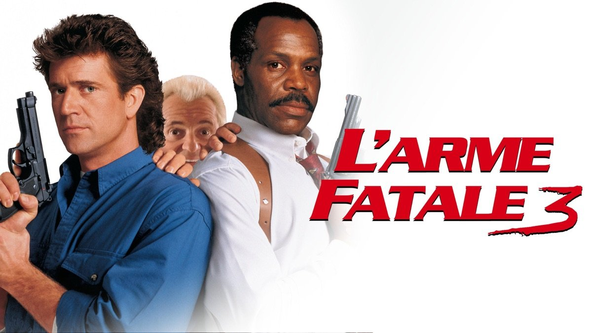
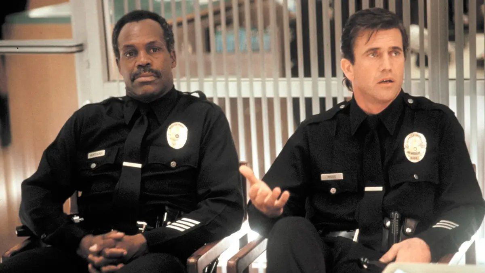
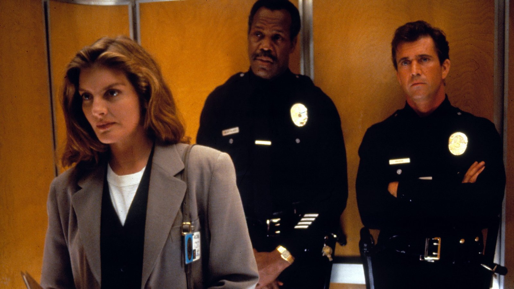

Celui-là, ce n'est pas une cassette comme les autres.
J'avais une dizaine d'années. Mon grand-père venait d'acheter la VHS, et je me souviendrai toute ma vie du moment où il me l'a tendue. On l'a mise dans le lecteur, et on l'a regardée ensemble.
C'était mon premier Arme Fatale. Une fois de plus, je suis entré dans la saga par une suite, sans rien savoir de ce qui s'était passé avant.
Il y avait d'abord cette musique, sur le générique : Sting et Eric Clapton, une guitare et une voix qui ouvraient le film comme une confidence.
Puis il y avait Riggs et Murtaugh, dans un immeuble piégé, penchés sur une bombe. Les fils, le compte à rebours, et ce cri de Riggs que je n'ai jamais oublié : « Roger ! Attrape le chat ! »
Ce film, je ne peux pas le séparer de mon grand-père. Chaque fois que je le revois, c'est lui que je revois, assis à côté de moi devant l'écran.
Ce soir, on remet la cassette de mon grand-père.

L'Arme Fatale 3 — affiche française, 1992
L'Arme Fatale 3.
1992. Réalisé par Richard Donner. Avec Mel Gibson, Danny Glover, Joe Pesci et Rene Russo.
En 1987, L'Arme Fatale invente presque à lui seul le buddy movie moderne. Martin Riggs, flic suicidaire et incontrôlable, se retrouve associé à Roger Murtaugh, père de famille prudent qui répète qu'il est trop vieux pour ces conneries. Deux ans plus tard, L'Arme Fatale 2 confirme le succès et fait entrer dans la bande Leo Getz, l'insupportable comptable joué par Joe Pesci.
Pour ce troisième volet, Richard Donner est toujours là, et l'équipe aussi. Murtaugh n'est plus qu'à huit jours de la retraite. Riggs, lui, n'a pas changé. Et une nouvelle venue entre dans la danse : Lorna Cole, inspectrice des affaires internes, aussi casse-cou que Riggs.
Une famille de cinéma qui se retrouve, des explosions, des poursuites, et une alchimie intacte entre Gibson et Glover.
C'est la suite qui a le moins changé de toute cette saison spéciale : même réalisateur, mêmes acteurs, même formule. La question se pose donc à l'envers : une suite peut-elle durer sans rien changer ?
Au début des années 90, L'Arme Fatale est l'une des franchises les plus rentables d'Hollywood. Le premier film, en 1987, a imposé un genre. Le deuxième, en 1989, a fait encore mieux au box-office. Pour Warner Bros., un troisième volet n'est même pas une question.
Richard Donner revient derrière la caméra, comme pour les deux premiers. À la production, on retrouve Joel Silver, celui de Die Hard et de Predator, et dont on a déjà croisé le nom dans SOMEDAY avec Fair Game.
Le scénario, lui, change de mains. Shane Black, l'auteur du premier film, avait imaginé pour la suite une histoire beaucoup plus sombre, qui n'avait pas été retenue. Pour ce troisième épisode, ce sont Jeffrey Boam et Robert Mark Kamen qui écrivent. Le script évolue en permanence pendant le tournage, et Donner laisse une large place à l'improvisation de ses acteurs. Il le sait : le cœur de la saga, ce n'est pas l'intrigue, c'est le duo.
Mel Gibson et Danny Glover reviennent donc, plus complices que jamais. Joe Pesci reprend son rôle de Leo Getz. Et la saga accueille une nouvelle venue : Rene Russo, dans le rôle de Lorna Cole, une inspectrice des affaires internes capable de tenir tête à Riggs sur son propre terrain.
Le film s'ouvre sur une scène devenue célèbre : l'explosion d'un immeuble. Elle n'a rien d'un trucage. La production a filmé la démolition réelle de l'ancien hôtel de ville d'Orlando, en Floride, programmée de toute façon, et l'a intégrée au film.
Pour la musique, Michael Kamen retrouve Eric Clapton et David Sanborn, fidèles depuis le premier volet. Pour le générique, Sting et Clapton enregistrent ensemble « It's Probably Me ».
L'Arme Fatale 3 sort aux États-Unis en mai 1992. L'objectif est simple : retrouver la famille, et en donner encore plus au public.

Murtaugh et Riggs, rétrogradés en tenue
Los Angeles.
Roger Murtaugh compte les jours. Plus que huit avant la retraite, et il compte bien les passer sans la moindre égratignure. Martin Riggs, lui, n'a aucune intention de lui faciliter la tâche.
Une intervention sur une bombe tourne mal, l'immeuble finit en ruines, et les deux inspecteurs se retrouvent rétrogradés, renvoyés en tenue pour faire la circulation dans les rues de la ville.
C'est de là qu'ils tombent sur une affaire bien plus grave. Des armes saisies par la police disparaissent des entrepôts de pièces à conviction pour se retrouver dans les rues, entre les mains des gangs. Parmi elles, des balles capables de traverser les gilets pare-balles des policiers.
Derrière ce trafic se cache un ancien flic, Jack Travis, qui connaît la maison par cœur et qui a toujours un coup d'avance.
Sur l'enquête, Riggs croise la route de Lorna Cole, des affaires internes. Elle est aussi téméraire que lui, aussi douée au combat, et aussi peu disposée à suivre les règles. Entre eux, l'affrontement commence comme une rivalité.
Et puis il y a Leo Getz, reconverti dans l'immobilier, toujours au mauvais endroit au mauvais moment, qui ne lâche plus le duo.
Huit jours avant la retraite, un trafic d'armes au cœur de la police, et une question qui pèse sur chaque scène : que va devenir Riggs quand Murtaugh ne sera plus là ?
L'Arme Fatale 3 pose la question inverse de celle des épisodes précédents. Die Hard 2, Rambo III et Superman III ont changé de décor, d'échelle ou de genre. Celui-ci ne change presque rien. Même réalisateur, mêmes acteurs, même ville, même formule.
Et pourtant, quelque chose a bougé : le cœur des personnages.
En 1987, Martin Riggs était un homme au bord du gouffre, qui gardait une balle pour lui-même. Cinq ans plus tard, il est apaisé. Il a trouvé une famille, celle des Murtaugh, et la seule chose qui lui fait encore peur, c'est de la perdre. Le compte à rebours de la retraite de Roger n'est pas qu'un ressort comique. C'est le vrai sujet du film : comment rester ensemble quand la vie veut vous séparer.
C'est là que le film gagne en émotion. Murtaugh, lui aussi, est rattrapé par la violence de la ville d'une façon qui le touche personnellement, et Danny Glover livre quelques-unes des scènes les plus fortes de la saga. Le buddy movie se double d'un film sur l'amitié qui vieillit.
Rene Russo, elle, est la vraie bonne idée de cet épisode. Lorna Cole n'est ni une victime ni un faire-valoir. Elle se bat aussi bien que Riggs, prend autant de risques, et leur rencontre tourne au duel. La scène où ils comparent leurs cicatrices, l'un après l'autre, jusqu'à la surenchère, est l'une des plus drôles et des plus tendres de la série.
Côté action, Richard Donner tient toujours la barre : l'immeuble qui s'effondre en ouverture, les poursuites, un final dans un chantier en flammes. Tout reste physique, lisible, généreux.
Tout n'est pas parfait. L'intrigue policière est mince, le méchant manque d'épaisseur, et Leo Getz est parfois plus envahissant que drôle. Le film tient moins par son histoire que par ses personnages.
Mais c'est peut-être la réponse à la question de cet épisode. Une suite peut garder la même formule, à condition de laisser ses personnages grandir. L'Arme Fatale 3 ne réinvente rien. Il prend des nouvelles d'une famille, et on est heureux de la retrouver.

Lorna Cole (Rene Russo) entre dans la famille
L'Arme Fatale 3 n'a jamais été un échec. C'est même le plus gros succès de la saga au moment de sa sortie : plus de trois cents millions de dollars de recettes dans le monde. Le public était au rendez-vous.
Mais le succès ne protège pas d'un déclassement.
La critique de l'époque lui a reproché ce qui faisait son charme : une intrigue légère, un ton plus comique, une formule qui commence à se répéter. Là où le premier film était un polar sombre, porté par un héros suicidaire, le troisième ressemblait de plus en plus à des retrouvailles de famille. Certains y ont vu une saga qui s'était adoucie.
Les admirateurs du premier film ont suivi le même raisonnement. Avec les années, L'Arme Fatale est devenu le classique respecté, celui qui a inventé le genre, signé Shane Black. L'Arme Fatale 2 est resté le favori des fans, pour son énergie et ses méchants mémorables. Le troisième, lui, s'est retrouvé au milieu, rarement cité en premier.
Puis L'Arme Fatale 4, en 1998, a refermé la saga et brouillé encore un peu plus les souvenirs. Entre le deuxième et le quatrième, le troisième s'est fondu dans l'ensemble : un bon épisode parmi d'autres, sans identité propre dans la mémoire collective.
Et pourtant, les images de L'Arme Fatale 3 sont restées : l'immeuble qui s'effondre en ouverture, les cicatrices de Riggs et Lorna, le compte à rebours de la retraite de Murtaugh, le « Roger ! Attrape le chat ! ».
Un film déclassé non pas par son échec, mais par son confort. Trop aimé pour être redécouvert, trop familier pour être vraiment regardé.
Parce qu'on croit le connaître par cœur, et qu'on le regarde rarement avec attention.
L'Arme Fatale 3 n'est pas seulement une suite de gags et d'explosions. C'est un film sur le temps qui passe. Sur un homme qui approche de la retraite et a peur de partir, et sur un autre qui a enfin trouvé sa place et redoute de la perdre. Revu adulte, ce qui frappe le plus, ce n'est pas l'action. C'est la tendresse.
Parce que Mel Gibson et Danny Glover sont au sommet de leur complicité. Ils n'ont plus besoin de se découvrir : ils se connaissent, se chamaillent, se protègent. Chaque échange sonne juste, comme une vieille amitié qu'on retrouve.
Parce que Rene Russo apporte au film une énergie nouvelle, et donne à Riggs une partenaire à sa mesure. Leur histoire est l'une des plus belles idées de toute la saga.
Parce que l'action reste un modèle d'artisanat : un vrai immeuble qui s'effondre, de vraies cascades, de vrais incendies. Richard Donner filme tout avec une clarté que beaucoup de films d'action actuels ont perdue.
Et parce que le film répond à la question de cet épisode. Une suite n'a pas forcément besoin de tout changer pour exister. Elle peut garder la même formule, les mêmes visages, la même musique, à condition de laisser ses personnages vieillir avec nous.
Pour moi, ce film est lié à jamais à un moment devant le lecteur, avec mon grand-père. Le revoir, c'est un peu le retrouver.
L'Arme Fatale 3 n'a pas cherché à réinventer la saga. Il a fait quelque chose de plus simple, et de plus rare : il a pris des nouvelles de ses personnages.
C'est une suite qui raconte la peur de se séparer, l'amitié qui résiste au temps, et une famille qu'on s'est choisie. Elle n'a pas la noirceur du premier film. Elle a autre chose : de la tendresse.
Tout le monde vous dira que ce n'est pas le meilleur de la saga.
Peut-être.
Mais pour moi, il n'y a jamais eu de comparaison possible. Je l'ai découvert en premier, à dix ans, sur une cassette que mon grand-père venait d'acheter. Je me souviens de sa main qui me tendait la boîte. Je me souviens de la guitare de Clapton et de la voix de Sting sur le générique. Je me souviens de Riggs penché sur sa bombe, qui criait : « Roger ! Attrape le chat ! »
Le film parle de deux hommes qui ont peur de ne plus être ensemble. Avec les années, je comprends mieux pourquoi il me touche autant.
Il y a des films qu'on aime pour ce qu'ils racontent, et d'autres pour ceux avec qui on les a vus. Celui-là, c'est les deux.
La cassette est dans le lecteur. On rembobine.
Titre original
Lethal Weapon 3
Pays
États-Unis
Genre
Action / Buddy movie
Durée
118 min
Producteurs
Joel Silver · Richard Donner
Avec aussi
Joe Pesci · Rene Russo · Stuart Wilson
Musique
Michael Kamen · Eric Clapton · David Sanborn
Fil conducteur
Saison Spéciale — La suite qui ne change rien
SOMEDAY — SPÉCIAL EP. 04